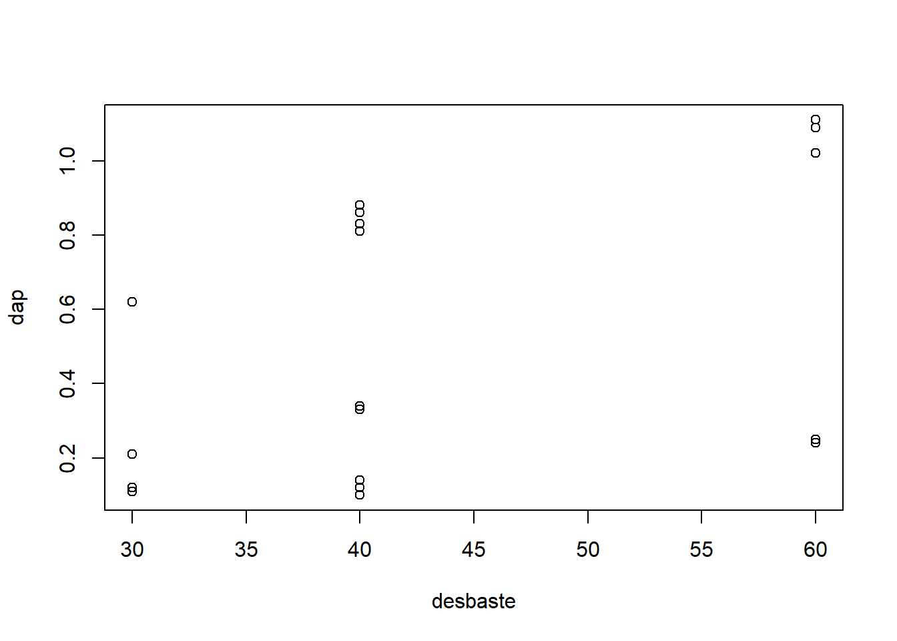
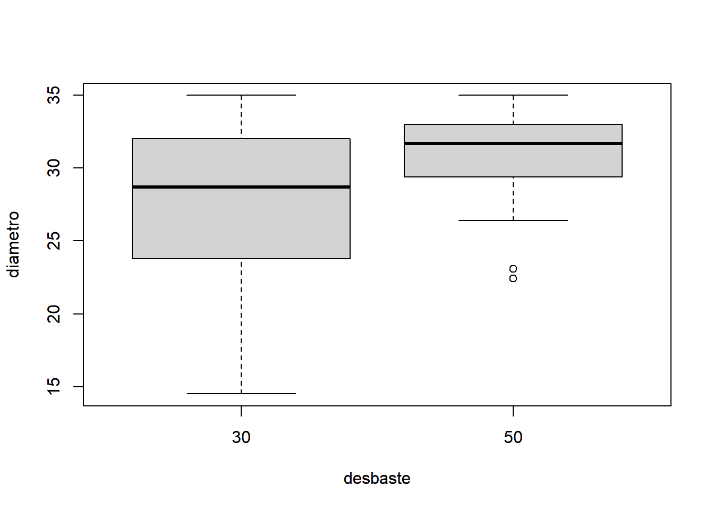
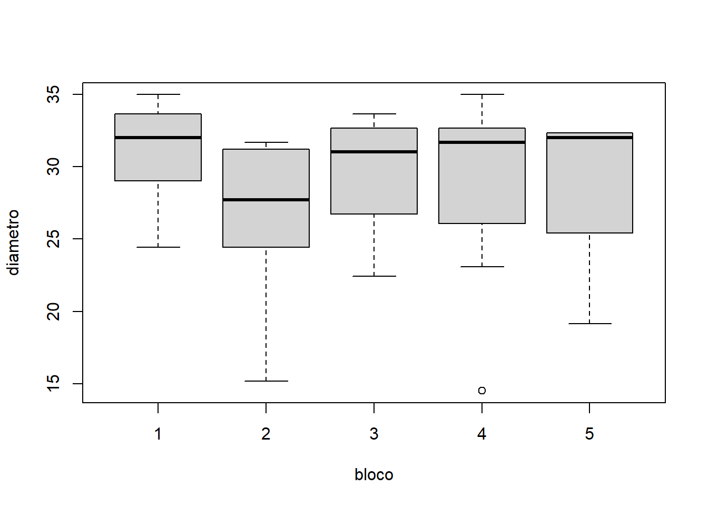

Cap. 11 Análise experimental não paramétrica
Os testes estatísticos não paramétricos não levam em consideração a distribuição original dos resíduos. Em geral eles seguem o mesmo procedimento que os testes paramétricos, iniciando pela formulação da hipótese, computando o valor da estatística do teste com base nos dados obtidos de amostras aleatórias e comparando a grandeza estatística do valor calculado com a referência. Assim como os teste paramétricos, existem inúmeros testes não-paramétricos para as diferentes hipóteses a serem testadas.
## Warning in read.table(file = file, header = header, sep
## = sep, quote = quote, : incomplete final line found by
## readTableHeader on './data/naoParam.csv'| Tipo | Numero.de.variaveis | Parametrico | Nao.parametrico |
|---|---|---|---|
| Dependente | 2 | Teste t | Mann-Whitney |
| Independente | 2 | Teste t | Wilcoxon |
| Independente | > 2 | ANOVA DIC | Kruskal-Wallis |
| Independente | > 2 | ANOVA DBC | Friedman |
Aqui será apresentado um exemplo de análise não-paramétrica de um experimento inteiramente casualizado (DIC) e outro em blocos casualizados (DBC).
11.1 Kruskal-Wallis (equivalente ao DIC)
Neste exemplo sera analisado um experimento que avalia o crescimento em altura das árvores remanescentes em de três intensidades de desbaste.
| desbaste | rep | dap |
|---|---|---|
| 30 | 1 | 0.62 |
| 30 | 2 | 0.62 |
| 30 | 3 | 0.62 |
| 30 | 4 | 0.11 |
| 30 | 5 | 0.21 |
| 30 | 6 | 0.11 |
| 30 | 7 | 0.62 |
| 30 | 8 | 0.62 |
| 30 | 9 | 0.12 |
| 30 | 10 | 0.62 |
| 40 | 1 | 0.33 |
| 40 | 2 | 0.34 |
| 40 | 3 | 0.86 |
| 40 | 4 | 0.81 |
| 40 | 5 | 0.86 |
| 40 | 6 | 0.88 |
| 40 | 7 | 0.10 |
| 40 | 8 | 0.14 |
| 40 | 9 | 0.12 |
| 40 | 10 | 0.83 |
| 60 | 1 | 1.11 |
| 60 | 2 | 0.24 |
| 60 | 3 | 1.11 |
| 60 | 4 | 0.24 |
| 60 | 5 | 0.25 |
| 60 | 6 | 1.11 |
| 60 | 7 | 1.02 |
| 60 | 8 | 1.09 |
| 60 | 9 | 1.11 |
| 60 | 10 | 1.11 |
O primeiro passo é importar o arquivo contendo os resultados do experimento para dentro do R. Esta tarefa pode ser realizada através do seguinte comando:
Em seguida, os dados devem ser explorados por meio de gráficos:

Os dados indicam que o incremento médio das árvores remanescentes de um desbaste de 60% da área basal cresceram aproximadamente 0.8 cm, ao passo que as árvores remanescentes de um desbaste de 40 % e 30 %, cresceram apenas ~ 0.6 e 0.5 cm respectivamente. Espera-se que o desbaste 60% seja significativamente diferente dos demais.
## ------------------------------------------------------------------------
## Quadro da analise de variancia
## ------------------------------------------------------------------------
## GL SQ QM Fc Pr>Fc
## Tratamento 2 0.9236 0.46181 3.9172 0.032084
## Residuo 27 3.1831 0.11789
## Total 29 4.1067
## ------------------------------------------------------------------------
## CV = 57.45 %
##
## ------------------------------------------------------------------------
## Teste de normalidade dos residuos ( Shapiro-Wilk )
## Valor-p: 0.0001554767
## ATENCAO: a 5% de significancia, os residuos nao podem ser considerados normais!
## ------------------------------------------------------------------------
##
## ------------------------------------------------------------------------
## Teste de homogeneidade de variancia
## valor-p: 0.3609866
## De acordo com o teste de bartlett a 5% de significancia, as variancias podem ser consideradas homogeneas.
## ------------------------------------------------------------------------
##
## Ajuste de modelos polinomiais de regressao
## ------------------------------------------------------------------------
##
## Modelo Linear
## =========================================
## Estimativa Erro.padrao tc valor.p
## -----------------------------------------
## b0 -0.0090 0.2266 -0.0397 0.9686
## b1 0.0140 0.0050 2.7854 0.0097
## -----------------------------------------
##
## R2 do modelo linear
## --------
## 0.990299
## --------
##
## Analise de variancia do modelo linear
## ==================================================
## GL SQ QM Fc valor.p
## --------------------------------------------------
## Efeito linear 1 0.9147 0.9147 7.76 0.00966
## Desvios de Regressao 1 0.0090 0.0090 0.08 0.78489
## Residuos 27 3.1831 0.1179
## --------------------------------------------------
## ------------------------------------------------------------------------
##
## Modelo quadratico
## =========================================
## Estimativa Erro.padrao tc valor.p
## -----------------------------------------
## b0 0.3510 1.3254 0.2648 0.7932
## b1 -0.0031 0.0621 -0.0494 0.9610
## b2 0.0002 0.0007 0.2757 0.7849
## -----------------------------------------
##
## R2 do modelo quadratico
## -
## 1
## -
##
## Analise de variancia do modelo quadratico
## ==================================================
## GL SQ QM Fc valor.p
## --------------------------------------------------
## Efeito linear 1 0.9147 0.9147 7.76 0.00966
## Efeito quadratico 1 0.0090 0.0090 0.08 0.78489
## Desvios de Regressao 0 0 0 0 1
## Residuos 27 3.1831 0.1179
## --------------------------------------------------
## ------------------------------------------------------------------------O teste de normalidade de resíduos é significativo, indicando que o modelo estatístico paramétrico não é adequado aos dados, e mesmo transformando, a normalidade de resíduos continua sendo rejeitada. Neste caso, recomenda-se o uso do teste não-paramétrico de Kruskal-Wallis.
##
## Kruskal-Wallis rank sum test
##
## data: dic.np$dap and dic.np$desbaste
## Kruskal-Wallis chi-squared = 7.8861, df = 2,
## p-value = 0.01939O teste indica que o tratamento é significativo, e portanto, as médias dos diferentes desbastes não podem ser consideradas iguais. Como foi antecipado pelo gráfico, pelo menos um nível de desbaste se difere dos demais. Não há desdobramento específico para os testes não-paramétricos, sendo a interpretação gráfica e a estatística descritiva o caminho ideal para avaliar desdobramento.
11.2 Friedman (equivalente ao DBC)
Neste exemplo, sera analisado um experimento que avalia o crescimento em diâmetro das árvores remanescente após duas intensidades de desbaste. O delineamento foi construído considerando blocos.
| desbaste | bloco | rep | diametro |
|---|---|---|---|
| 30 | 1 | 1 | 29.700 |
| 30 | 1 | 2 | 34.980 |
| 30 | 1 | 3 | 24.420 |
| 30 | 1 | 4 | 28.380 |
| 30 | 2 | 1 | 25.740 |
| 30 | 2 | 2 | 23.100 |
| 30 | 2 | 3 | 27.060 |
| 30 | 2 | 4 | 15.180 |
| 30 | 3 | 1 | 30.360 |
| 30 | 3 | 2 | 27.060 |
| 30 | 3 | 3 | 33.660 |
| 30 | 3 | 4 | 22.440 |
| 30 | 4 | 1 | 32.340 |
| 30 | 4 | 2 | 29.040 |
| 30 | 4 | 3 | 14.520 |
| 30 | 4 | 4 | 31.680 |
| 30 | 5 | 1 | 32.340 |
| 30 | 5 | 2 | 19.140 |
| 30 | 5 | 3 | 32.340 |
| 30 | 5 | 4 | 31.680 |
| 50 | 1 | 1 | 33.660 |
| 50 | 1 | 2 | 33.660 |
| 50 | 1 | 3 | 33.660 |
| 50 | 1 | 4 | 30.360 |
| 50 | 2 | 1 | 31.020 |
| 50 | 2 | 2 | 31.680 |
| 50 | 2 | 3 | 28.380 |
| 50 | 2 | 4 | 31.416 |
| 50 | 3 | 1 | 26.400 |
| 50 | 3 | 2 | 32.340 |
| 50 | 3 | 3 | 33.000 |
| 50 | 3 | 4 | 31.680 |
| 50 | 4 | 1 | 34.980 |
| 50 | 4 | 2 | 31.680 |
| 50 | 4 | 3 | 33.000 |
| 50 | 4 | 4 | 23.100 |
| 50 | 5 | 1 | 28.380 |
| 50 | 5 | 2 | 32.340 |
| 50 | 5 | 3 | 32.340 |
| 50 | 5 | 4 | 22.440 |
O primeiro passo é importar o arquivo contendo os resultados do experimento para dentro do R. Esta tarefa pode ser realizada através do seguinte comando:
É fundamental explorar os dados de forma gráfica para antecipar o resultado da análise estatística. A construção do gráfico ajuda na compreensão do fenômeno estudado e na validação da análise estatística escolhida. Por se tratar de um experimento com o tratamento formado por níveis qualitativos, recomenda-se o uso do boxplot.


A análise do experimento em questão pode ser então realizada construindo a função dbc() da seguinte maneira:
## ------------------------------------------------------------------------
## Quadro da analise de variancia
## ------------------------------------------------------------------------
## GL SQ QM Fc Pr>Fc
## Tratamento 1 123.75 123.749 5.2404 0.02840
## Bloco 4 81.30 20.326 0.8607 0.49731
## Residuo 34 802.89 23.614
## Total 39 1007.94
## ------------------------------------------------------------------------
## CV = 16.75 %
##
## ------------------------------------------------------------------------
## Teste de normalidade dos residuos
## valor-p: 0.002575723
## ATENCAO: a 5% de significancia, os residuos nao podem ser considerados normais!
## ------------------------------------------------------------------------
##
## ------------------------------------------------------------------------
## Teste de homogeneidade de variancia
## valor-p: 0.1026776
## De acordo com o teste de han a 5% de significancia, as variancias podem ser consideradas homogeneas.
## ------------------------------------------------------------------------
##
## Teste de Tukey
## ------------------------------------------------------------------------
## Grupos Tratamentos Medias
## a 50 30.7758
## b 30 27.258
## ------------------------------------------------------------------------Veja que o teste de normalidade deu significativo, indicando assim que a hipótese de normalidade de resíduos deve ser rejeitada. A variável diametro é contínua e portanto a transformação logarítmica é a mais indicada para a transformação dos dados.
## ------------------------------------------------------------------------
## Quadro da analise de variancia
## ------------------------------------------------------------------------
## GL SQ QM Fc Pr>Fc
## Tratamento 1 0.20102 0.201023 5.0766 0.03081
## Bloco 4 0.12703 0.031759 0.8020 0.53242
## Residuo 34 1.34633 0.039598
## Total 39 1.67439
## ------------------------------------------------------------------------
## CV = 5.94 %
##
## ------------------------------------------------------------------------
## Teste de normalidade dos residuos
## valor-p: 0.0003432296
## ATENCAO: a 5% de significancia, os residuos nao podem ser considerados normais!
## ------------------------------------------------------------------------
##
## ------------------------------------------------------------------------
## Teste de homogeneidade de variancia
## valor-p: 0.06966806
## De acordo com o teste de han a 5% de significancia, as variancias podem ser consideradas homogeneas.
## ------------------------------------------------------------------------
##
## Teste de Tukey
## ------------------------------------------------------------------------
## Grupos Tratamentos Medias
## a 50 3.420159
## b 30 3.278376
## ------------------------------------------------------------------------Infelizmente, mesmo com a transformação os resíduos continuam não apresentando normalidade. A recomendação portanto é seguir com a análise não paramétrica. Por se tratar de um DBC, o teste indicado é o Teste de Friedman. O teste de Friedman não aceita repetições dentro do bloco. Por isso, será necessário agregar as repetições através de média.
dbc.aggr = aggregate(dbc.np$diametro,
by = list(desb = dbc.np$desbaste,
bloco = dbc.np$bloco),
FUN = mean)
print(dbc.aggr)## desb bloco x
## 1 30 1 29.370
## 2 50 1 32.835
## 3 30 2 22.770
## 4 50 2 30.624
## 5 30 3 28.380
## 6 50 3 30.855
## 7 30 4 26.895
## 8 50 4 30.690
## 9 30 5 28.875
## 10 50 5 28.875O teste de Friedman pode ser assim chamado:
##
## Friedman rank sum test
##
## data: x and desb and bloco
## Friedman chi-squared = 4, df = 1, p-value =
## 0.0455Segundo o teste de Friedman, existe uma diferença significativa entre os desbaste. Uma exploração gráfica dos dados, ou uma análise estatística descritiva podem auxiliar no desdobramento do tratamento.